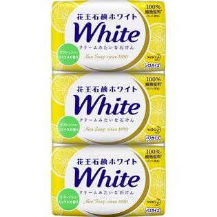

返回列表
产品名称：花王ホワイト リフレッシュシトラスの香り バスサイズ

花王 花王ホワイト リフレッシュシトラスの香り バスサイズ ３９０Ｇ
メーカー 花王
JANコード 4901301309242
商品の特徴
泡が違う！
クリームみたいな石けん
- 成分・分量
- パーム核脂肪酸Na、パーム脂肪酸Na、水、パーム核脂肪酸、パーム脂肪酸、グリセリン、香料、スクワラン、グルコン酸Na、エチドロン酸、塩化Na、酸化チタン、ペンテト酸5Na、PEG-6、BHT
- 用法及び用量
- ・肌に傷、湿疹等異常のある時は使わない。
・赤み、かゆみ、刺激等の異常が出たら使用を中止し、皮フ科医へ相談する。使い続けると症状が悪化することがある。
・目に入らないよう注意し、入った時は、すぐに充分洗い流す。
・誤食等を防ぐため置き場所に注意する。